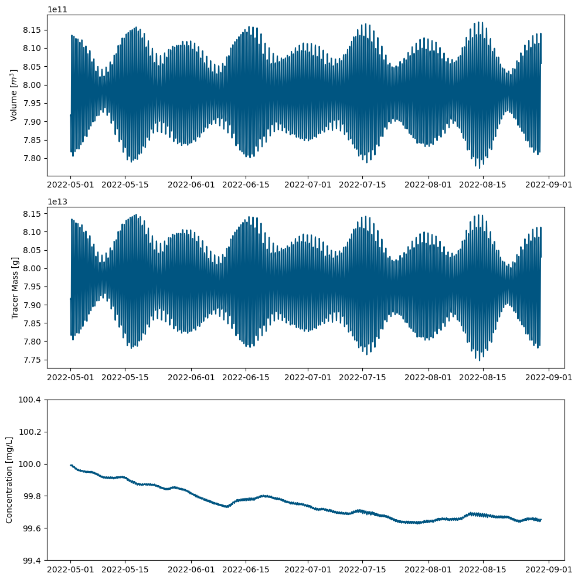

Mass Balance Analysis: Analysing Tracer Mass and Fluxes in TUFLOW FV Outputs#
This notebook provides a guide on how to import and preprocess the necessary data files, create data frames, and perform calculations to derive useful metrics for tracer mass and fluxes.
Import Libraries#
import matplotlib.pyplot as plt
import pandas as pd
import datetime as dt
from matplotlib.ticker import ScalarFormatter
Read tuflowfv tracer mass output csv#
‘TRACE_1_MASS [units]’ represents the mass of tracer 1 in the whole model domain.
Units are concentration units x m3.
We have used the conconetration units as mg/L for this exercise.
mass_bal = r"X:\Scratch1\scratchers\Reintraid\high_res\dispersion\mass_bal\003\RT_dis_mass_bal_003_MASS - Copy.csv"
df_mass = pd.read_csv(mass_bal, delimiter=',', usecols=['TIME', 'VOLUME [m^3]', 'TRACE_1_MASS [units]'])
# head of mass_bal dataframe
print(df_mass.tail())
TIME VOLUME [m^3] TRACE_1_MASS [units]
3556 26/09/2022 04:00:00 7.843297e+11 7.812574e+13
3557 26/09/2022 05:00:00 7.915375e+11 7.884979e+13
3558 26/09/2022 06:00:00 8.000135e+11 7.969088e+13
3559 26/09/2022 07:00:00 8.073269e+11 8.042501e+13
3560 26/09/2022 08:00:00 8.117801e+11 8.087006e+13
Create additional columns for trcaer mass dataframe#
Two new columns are added to the dataframe df_mass.
‘TRACE_1_MASS [g]’ is as same as the TRACE_1_MASS [units].
‘TRACE_1_CONC’ is the concentration of the TRACE_1 which has units of g/m3 or mg/L
df_mass['TRACE_1_MASS [g]'] = df_mass['TRACE_1_MASS [units]']
df_mass['TRACE_1_CONC'] = df_mass['TRACE_1_MASS [g]'] / df_mass['VOLUME [m^3]']
print(df_mass.head())
TIME VOLUME [m^3] TRACE_1_MASS [units] TRACE_1_MASS [g] \
0 01/05/2022 00:00:00 7.915585e+11 7.914863e+13 7.914863e+13
1 01/05/2022 01:00:00 7.917750e+11 7.917126e+13 7.917126e+13
2 01/05/2022 02:00:00 7.882823e+11 7.882071e+13 7.882071e+13
3 01/05/2022 03:00:00 7.828647e+11 7.828067e+13 7.828067e+13
4 01/05/2022 04:00:00 7.816740e+11 7.816029e+13 7.816029e+13
TRACE_1_CONC
0 99.990879
1 99.992119
2 99.990460
3 99.992591
4 99.990904
Slice the dataframe based on start and end times#
#add start and end time to slice them easier
start_time = '01/05/2022 00:00:00'
end_time = '30/08/2022 00:00:00'
# Convert 'TIME' column to datetime format
df_mass['TIME'] = pd.to_datetime(df_mass['TIME'], dayfirst=True)
# Convert start and end times to datetime format
start_time = pd.to_datetime(start_time, dayfirst=True)
end_time = pd.to_datetime(end_time, dayfirst=True)
# Slice the dataframe based on the start and end times
df_slicemass = df_mass[(df_mass['TIME'] >= start_time) & (df_mass['TIME'] <= end_time)]
#df_sliceflux = df_flux[(df_flux['TIME'] >= start_time) & (df_flux['TIME'] <= end_time)]
#head rows
print(df_slicemass.head())
#print(df_sliceflux.head())
TIME VOLUME [m^3] TRACE_1_MASS [units] TRACE_1_MASS [g] \
0 2022-05-01 00:00:00 7.915585e+11 7.914863e+13 7.914863e+13
1 2022-05-01 01:00:00 7.917750e+11 7.917126e+13 7.917126e+13
2 2022-05-01 02:00:00 7.882823e+11 7.882071e+13 7.882071e+13
3 2022-05-01 03:00:00 7.828647e+11 7.828067e+13 7.828067e+13
4 2022-05-01 04:00:00 7.816740e+11 7.816029e+13 7.816029e+13
TRACE_1_CONC
0 99.990879
1 99.992119
2 99.990460
3 99.992591
4 99.990904
Create plots for tracer mass, volume and concentration#
# Create a figure with three subplots
fig, axs = plt.subplots(nrows=3, ncols=1, figsize=(10, 10))
# Plot timeseries for 'VOLUME [m^3]'
axs[0].plot(df_slicemass['TIME'], df_slicemass['VOLUME [m^3]'],color='#005581')
#axs[0].set_title('Volume')
#axs[0].set_xlabel('Time')
axs[0].set_ylabel('Volume [$m^3$]')
axs[0].tick_params(axis='x', rotation=0)
# Plot timeseries for 'TRACE_1_MASS [g]'
axs[1].plot(df_slicemass['TIME'], df_slicemass['TRACE_1_MASS [g]'],color='#005581')
#axs[1].set_title('Tracer Mass')
#axs[1].set_xlabel('Time')
axs[1].set_ylabel('Tracer Mass [g]')
axs[1].tick_params(axis='x', rotation=0)
# Plot timeseries for 'Tracer Concentration'
axs[2].plot(df_slicemass['TIME'], df_slicemass['TRACE_1_CONC'],color='#005581')
#axs[2].set_title('Tracer Concentration')
#axs[2].set_xlabel('Time')
axs[2].set_ylim(99.4, 100.4)
axs[2].set_ylabel('Concentration [mg/L]')
axs[2].tick_params(axis='x', rotation=0)
# Format the y-axis ticks using ScalarFormatter
formatter = ScalarFormatter(useMathText=True)
formatter.set_scientific(True)
formatter.set_powerlimits((-3, 3)) # Change these values to control the range of exponents
axs[2].yaxis.set_major_formatter(formatter)
# Adjust the layout of the subplots
plt.tight_layout()
# Show the figure
plt.show()
fig.savefig('../figures/SiteA_Mass_Balance_highdif1.png',dpi=300)
#fig.savefig('my_figure.png', dpi=300, bbox_inches='tight')

---------------------------------------------------------------------------
FileNotFoundError Traceback (most recent call last)
Cell In[5], line 37
35 # Show the figure
36 plt.show()
---> 37 fig.savefig('../figures/SiteA_Mass_Balance_highdif1.png',dpi=300)
38 #fig.savefig('my_figure.png', dpi=300, bbox_inches='tight')
File ~\.conda\envs\coastal\lib\site-packages\matplotlib\figure.py:3343, in Figure.savefig(self, fname, transparent, **kwargs)
3339 for ax in self.axes:
3340 stack.enter_context(
3341 ax.patch._cm_set(facecolor='none', edgecolor='none'))
-> 3343 self.canvas.print_figure(fname, **kwargs)
File ~\.conda\envs\coastal\lib\site-packages\matplotlib\backend_bases.py:2366, in FigureCanvasBase.print_figure(self, filename, dpi, facecolor, edgecolor, orientation, format, bbox_inches, pad_inches, bbox_extra_artists, backend, **kwargs)
2362 try:
2363 # _get_renderer may change the figure dpi (as vector formats
2364 # force the figure dpi to 72), so we need to set it again here.
2365 with cbook._setattr_cm(self.figure, dpi=dpi):
-> 2366 result = print_method(
2367 filename,
2368 facecolor=facecolor,
2369 edgecolor=edgecolor,
2370 orientation=orientation,
2371 bbox_inches_restore=_bbox_inches_restore,
2372 **kwargs)
2373 finally:
2374 if bbox_inches and restore_bbox:
File ~\.conda\envs\coastal\lib\site-packages\matplotlib\backend_bases.py:2232, in FigureCanvasBase._switch_canvas_and_return_print_method.<locals>.<lambda>(*args, **kwargs)
2228 optional_kws = { # Passed by print_figure for other renderers.
2229 "dpi", "facecolor", "edgecolor", "orientation",
2230 "bbox_inches_restore"}
2231 skip = optional_kws - {*inspect.signature(meth).parameters}
-> 2232 print_method = functools.wraps(meth)(lambda *args, **kwargs: meth(
2233 *args, **{k: v for k, v in kwargs.items() if k not in skip}))
2234 else: # Let third-parties do as they see fit.
2235 print_method = meth
File ~\.conda\envs\coastal\lib\site-packages\matplotlib\backends\backend_agg.py:509, in FigureCanvasAgg.print_png(self, filename_or_obj, metadata, pil_kwargs)
462 def print_png(self, filename_or_obj, *, metadata=None, pil_kwargs=None):
463 """
464 Write the figure to a PNG file.
465
(...)
507 *metadata*, including the default 'Software' key.
508 """
--> 509 self._print_pil(filename_or_obj, "png", pil_kwargs, metadata)
File ~\.conda\envs\coastal\lib\site-packages\matplotlib\backends\backend_agg.py:458, in FigureCanvasAgg._print_pil(self, filename_or_obj, fmt, pil_kwargs, metadata)
453 """
454 Draw the canvas, then save it using `.image.imsave` (to which
455 *pil_kwargs* and *metadata* are forwarded).
456 """
457 FigureCanvasAgg.draw(self)
--> 458 mpl.image.imsave(
459 filename_or_obj, self.buffer_rgba(), format=fmt, origin="upper",
460 dpi=self.figure.dpi, metadata=metadata, pil_kwargs=pil_kwargs)
File ~\.conda\envs\coastal\lib\site-packages\matplotlib\image.py:1689, in imsave(fname, arr, vmin, vmax, cmap, format, origin, dpi, metadata, pil_kwargs)
1687 pil_kwargs.setdefault("format", format)
1688 pil_kwargs.setdefault("dpi", (dpi, dpi))
-> 1689 image.save(fname, **pil_kwargs)
File ~\.conda\envs\coastal\lib\site-packages\PIL\Image.py:2428, in Image.save(self, fp, format, **params)
2426 fp = builtins.open(filename, "r+b")
2427 else:
-> 2428 fp = builtins.open(filename, "w+b")
2430 try:
2431 save_handler(self, fp, filename)
FileNotFoundError: [Errno 2] No such file or directory: '../figures/SiteA_Mass_Balance_highdif1.png'
Calculate Mass balance error
# Find the total mass of tracer present in the model domain at the end of simulation
final_tracer_mass = df_slicemass['TRACE_1_MASS [g]'].iloc[-1]
# Set the time of mass added (considering only the minute part of the time)
mass_added_time = pd.to_datetime('01/05/2022 00:00', format='%d/%m/%Y %H:%M')
# Find the mass of tracer added
df_time = df_slicemass.copy()
df_time['TIME'] = pd.to_datetime(df_time['TIME'], format='%d/%m/%Y %H:%M:%S')
mass_added = df_time.loc[df_time['TIME'].dt.strftime('%d/%m/%Y %H:%M') == mass_added_time.strftime('%d/%m/%Y %H:%M'), 'TRACE_1_MASS [g]'].iloc[0]
# Calculate the mass balance error as a percentage
mass_balance_error = ((final_tracer_mass - mass_added) / mass_added) * 100
print('Mass balance error: {:.2f}%'.format(mass_balance_error))
Mass balance error: 1.46%